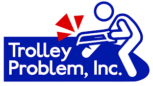

¿De qué nos inspiramos?
El proyecto Código Roto surge de la combinación de varias influencias que me parecieron interesantes y atractivas. Principalmente, está inspirado en los libros famosos de "Elige tu propia aventura", que permiten al lector tomar decisiones que cambian el curso de la historia y crean múltiples finales posibles.
Además, tomé mucha inspiración del juego Trolley Inc, que explora dilemas morales profundos basados en el famoso dilema del tranvía, una temática que quise trasladar a un formato web interactivo y accesible.

Libros "Elige tu propia aventura"

Juego "Trolley Inc"